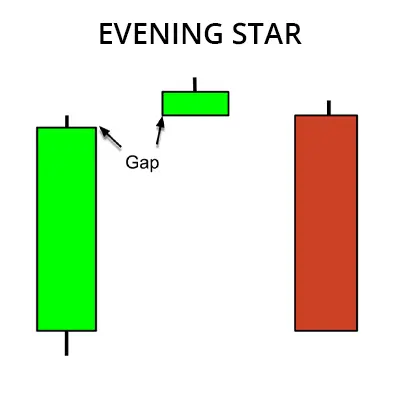

இவனிங் ஸ்டார் முறைமை ஒரு வணிக முறைமையாகும், அது பங்கு சந்தையில் உயர்ந்த மாற்றங்கள்
இல்லாமல் கீழே செல்லும் எச்சரிக்கையை குறிக்கின்றது. இந்த முறைமை மூன்று கேண்டல்ஸ்டிக்ஸ்
அல்லது மொழித்தீ மூலம் உருவாக்கப்படுகின்றது. முதலாவது கேண்டல் ஸ்டிக் பெரிய நீளமான
உயர்முக கேண்டல் ஸ்டிக்; இரண்டாம் கேண்டல் ஸ்டிக் சிறிய நீளமான கீழ்முக கேண்டல் ஸ்டிக்;
மூன்றாவது கேண்டல் ஸ்டிக് பெரிய நீளமான கீழ்முக கேண்டல் ஸ்டிக்.
முதல் கேண்டல் ஸ்டிக் பங்கு சந்தை உயர்ந்த சூழ்நிலை காட்டுவதால், இரண்டாம் கேண்டல் ஸ்டிக்
விற்பனை அமுல்நிலை அதிகரிக்கின்றது; மூன்றாவது கேண்டல் ஸ்டிக் பங்கு முடிவுகள் கீழ்முக
சூழ்நிலையில் உள்ளன. இவனிங் ஸ்டார் முறைமை ஒரு வலிமையான கீழ்முக சூழ்நிலை
எச்சரிக்கை வழங்குகின்றது. இந்த முறைமை பார்க்கும்போது, பங்கு சந்தையில் கீழ்முக
சூழ்நிலையில் வணிகம் செய்யலாம்.